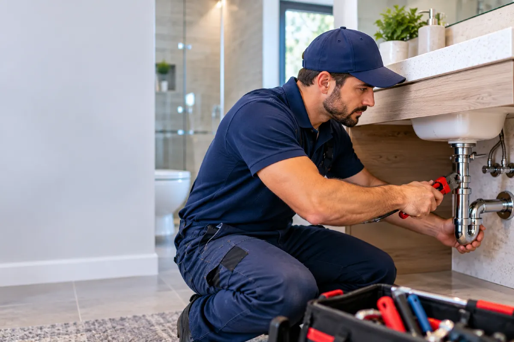

Water Heater Repair in Round Rock, TX
Tank, burner, thermostat, and leak checks for water heaters in Round Rock.
A water heater that rumbles behind a utility-room door but delivers only lukewarm water is not the same job as a heater leaving a wet trail from the closet or garage into the hallway. The first problem usually shows at the shower or kitchen tap; the second shows up as water at the base, a dripping relief pipe, or a soaked drain pan. We diagnose and repair both tank and tankless units, tracing the symptom back to the heater rather than treating every complaint as the same failure.
Hot water that fades during a shower can come from a worn heating element, a thermostat, sediment at the bottom of a tank, an undersized burner flame, or a tankless unit that is shutting down mid-cycle. Water around the heater can come from a loose supply connection, the temperature-pressure relief valve, a corroded fitting, a leaking drain valve, or the tank itself. We check the appliance, its water connections, the vent or electrical supply, and the discharge piping before recommending a repair.
A loss of hot water without a leak can sometimes wait until the heater can be inspected, provided there is no gas odor, burning smell, tripped breaker, or water escaping from the unit. Water at the tank base, a leaking relief line, or a burner that will not operate safely should not wait, because continued water flow can damage flooring and a fuel or electrical fault can affect the heater’s safe operation.
No hot water or puddles
Calls often start with “no hot water,” “the shower goes cold,” “the water heater is making a popping noise,” or “there is a puddle under the tank.” A pilot that will not stay lit on a gas heater points to a different set of parts than an electric heater with a reset button that keeps tripping. Rust-colored water from several hot taps may involve tank corrosion or an aging anode rod, while a steady drip from the pipe outside the heater may be coming from the relief valve instead of the tank. A sulfur-like smell, a burner that clicks without lighting, or a display showing an error code gives us another useful starting point. These symptoms can sound alike from across a room, but they lead to different failed parts, repair steps, and job costs once we inspect the heater.
Tank and burner inspection
During an inspection, we start at the model plate and identify whether the unit is gas, electric, or tankless, then check the age, capacity, fuel connection, shutoff valve, venting, electrical supply, and visible piping. We look for moisture at the cold-water inlet, hot-water outlet, drain valve, relief valve, expansion tank, and the seam around the tank jacket. On a gas unit, we inspect the burner compartment, ignition components, pilot assembly where fitted, combustion air openings, and vent pipe. On an electric unit, we test the thermostat, upper and lower elements, wiring terminals, and reset control; many residential electric tanks operate on a 240-volt circuit.
A first inspection and basic testing commonly takes about 20 to 40 minutes, although a concealed heater closet, an active leak, or a tankless error code can add time. If the fault is an accessible thermostat, heating element, thermocouple, ignition part, relief valve, or supply connector, we can often complete the repair on the same visit when the required part is available. A corroded tank, a damaged vent route, a seized shutoff, a replacement unit, or a control board that must be ordered may require a separate scheduled installation or return visit.
Anodes, shutoffs and access
The age and condition of the heater matter because a replaceable heating element or thermostat is a different repair from corrosion through the tank wall. An anode rod that has worn down can contribute to rust and odor issues, while a tank that is leaking from its body generally needs replacement rather than a new external fitting. The model, fuel type, and availability of the required burner assembly, element, thermostat, or control board also affect the scope of the work.
Access changes the job as well. A heater in an open garage is usually simpler to inspect than a unit behind shelving, in a tight closet, on an elevated platform, or connected to rigid pipe with little room around the shutoff valve. If the water shutoff has seized, the supply lines are corroded, or the drain valve will not open, additional work may be needed before the failed component can be removed. When replacement affects gas piping, venting, electrical connections, or local permit requirements, any required inspection or sign-off also becomes part of planning the work.
Model plate and access panel
Before calling, check the model number and serial number on the manufacturer’s plate, which is commonly attached to the side of a tank or behind an access panel on a tankless unit. Let us know whether the heater is in a garage, attic, closet, utility room, or exterior enclosure, and whether there is clear access to the front panel and water shutoff. The approximate installation age, the fuel type, and any error code or flashing light on the display can help us identify likely parts. If water is running now, note whether it is coming from the top connections, the relief pipe, the drain valve, or the bottom of the tank. Call Plumbing Solutions Round Rock at (737) 405-5790, because water escaping from a heater can continue into drywall, flooring, and the subfloor while the leak remains active.
Hours of operation
| Monday | Open 24 hours |
| Tuesday | Open 24 hours |
| Wednesday | Open 24 hours |
| Thursday | Open 24 hours |
| Friday | Open 24 hours |
| Saturday | Open 24 hours |
| Sunday | Open 24 hours |
Not what you were after? Go back to the home page or leak repair.